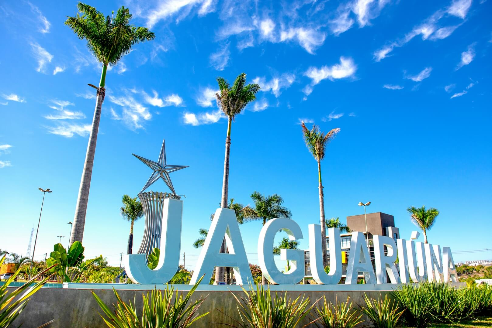

Jaguariúna
Município que resgata tradições ferroviárias – especialmente por meio da Maria Fumaça, que atrai turistas para
passeios históricos até Lindóia, reforçando seu charme de cidade do interior.
Pontos Turísticos
- Passeio de Maria Fumaça (experiência histórica)
- Estação Ferroviária histórica (memória ferroviária)
- Parque Pedro Cola (natureza e esportes)
- Rally da Fumaça e eventos culturais
- Fazendas históricas e áreas rurais preservadas
